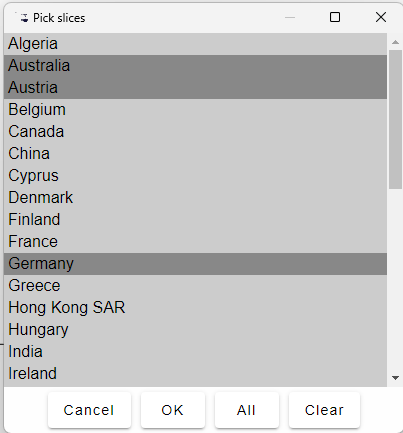

Pick axis slices lets you select an arbitrary number of slices—as was done above to choose just the USA and Japan to compare their rates of inflation. Individual slices can be chosen by left-clicking on the slice; to select more than one slice, hold down the control key as you click.
